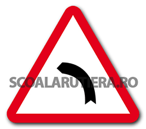

Curbă la stânga
Denumire:
„Curbă la stânga”
Semnificație (informație importantă):
Acest indicator vă avertizează că urmează fie o curbă la stânga.
Amplasare (informație suplimentară):
Fiind un indicator de avertizare, amplasarea acestuia se face la o distanță de maximum 50 de metri înainte de locul periculos, în localități sau la o distanță cuprinsă între 100 și 250 de metri înainte de locul periculos, în afara localităților.
Înainte de intrarea în curbele care îndeplinesc una din următoarele condiții:
raza < 600 m și bisectoarea > R / 15;
distanța de vizibilitate este < 150 m.
Alte informații utile (informație suplimentară):
În cazul în care curba este semnalizată ca fiind o curbă deosebit de periculoasă (semnalizare care se efectuează prin indicatorul „Curbă deosebit de periculoasă”) sau în cazul în care vizibilitatea în curbă este mai mică de 50 de metri, legislația rutieră impune obligația de a se circula cu o viteză care să nu depășească 30 km/h în localități sau 50 km/h în afara localităților. În cazul în care vizibilitatea în curbă este mai mică de 50 de metri, pe lângă obligația privind viteza de deplasare, legislația rutieră impune și interdicția de efectuare a tuturor manevrelor (depășire, oprire, staționare, mers înapoi și întoarcere).
